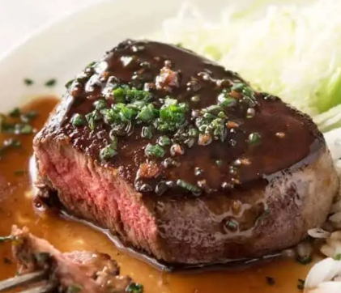

Beef Steak
Description
A delicious beef steak cooked to perfection and seasoned with herbs and spices.

Ingredients
- 2 beef steaks (ribeye, sirloin, or your choice)
- Salt and pepper to taste
- 2 tablespoons olive oil
- 2 cloves garlic, minced
- 1 teaspoon fresh rosemary, chopped
- 1 teaspoon fresh thyme, chopped
- 1 tablespoon butter
Instructions
- Season the beef steaks with salt and pepper on both sides.
- Heat olive oil in a skillet over medium-high heat.
- Add the steaks to the skillet and cook for 3-4 minutes on each side for medium-rare, or adjust cooking time to your desired doneness.
- Add minced garlic, rosemary, and thyme to the skillet during the last minute of cooking.
- Remove the steaks from the skillet and let them rest for 5 minutes before serving.
- Serve hot with your favorite sides.